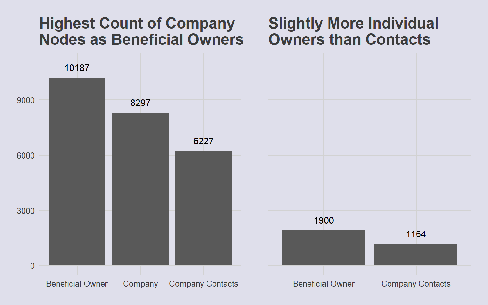
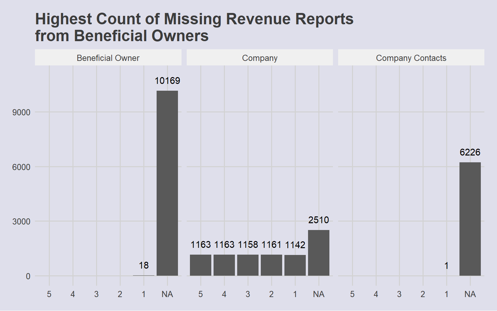

Code
pacman::p_load(jsonlite, tidyverse, skimr, Hmisc, kable, kableExtra, ggplot2, scales, ggthemes,visNetwork, tidygraph, ggrain, patchwork, ggpubr)VAST Challenge 2023: Mini-Challenge 3
FishEye International, a non-profit focused on countering illegal, unreported, and unregulated (IUU) fishing, has been given access to an international finance corporation’s database on fishing related companies. In the past, FishEye has determined that companies with anomalous structures are far more likely to be involved in IUU (or other fishy business). FishEye has transformed the database into a knowledge graph, including information about companies, owners, workers, and financial status. FishEye is aiming to use this graph to identify anomalies that could indicate if a company is involved in IUU.
Project Objective:
This study aims to use visual analytics to
The following packages are used for this study:
jsonlite to read and process raw .json data filestidyverse, a collection of packages for data analysis (particularly dplyr for data manipulation)skimr and Hmisc for generating summary statistics of dataframes and variableskable and kableExtra for styling tables from dataframesggplot2 and ggpubr for plot visualisationsscales to complement ggplot2, specifically for specifying axes breaksggrain for raincloud plots to visualise density distributionspatchwork for multiple plot layoutsvisNetwork for network graph visualisationsggthemes to standardise plot aestheticspacman::p_load(jsonlite, tidyverse, skimr, Hmisc, kable, kableExtra, ggplot2, scales, ggthemes,visNetwork, tidygraph, ggrain, patchwork, ggpubr)jsonlite package was used to read .json files
mc3 <- fromJSON("data/MC3.json")mc3 challenge data is an undirected graph with links and nodes dataframes. These are stored as lists instead of vector columns. Nodes and Links are extracted as separate dataframes for analysis from the .json file:
mc3_links <- as_tibble(mc3$links) %>%
# Change all variable types to character to create dataframe
mutate(source = as.character(source),
target = as.character(target),
type = as.character(type)) %>%
group_by(source, target, type) %>%
summarise(weights = n()) %>%
filter(source != target) %>%
ungroup()
mc3_nodes <- as_tibble(mc3$nodes) %>%
mutate(id = as.character(id),
type = as.character(type),
country = as.character(country),
product_services = as.character(product_services),
# Convert to character first to unlist, then revert to numeric form
revenue_omu = as.numeric(as.character(revenue_omu))) %>%
# Reorganize columns
select(id, country, type, revenue_omu, product_services)| Name | mc3_nodes |
| Number of rows | 27622 |
| Number of columns | 5 |
| _______________________ | |
| Column type frequency: | |
| character | 4 |
| numeric | 1 |
| ________________________ | |
| Group variables | None |
Variable type: character
| skim_variable | n_missing | complete_rate | min | max | empty | n_unique | whitespace |
|---|---|---|---|---|---|---|---|
| id | 0 | 1 | 6 | 64 | 0 | 22929 | 0 |
| country | 0 | 1 | 2 | 15 | 0 | 100 | 0 |
| type | 0 | 1 | 7 | 16 | 0 | 3 | 0 |
| product_services | 0 | 1 | 4 | 1737 | 0 | 3244 | 0 |
Variable type: numeric
| skim_variable | n_missing | complete_rate | mean | sd | p0 | p25 | p50 | p75 | p100 | hist |
|---|---|---|---|---|---|---|---|---|---|---|
| revenue_omu | 21515 | 0.22 | 1822155 | 18184433 | 3652.23 | 7676.36 | 16210.68 | 48327.66 | 310612303 | ▇▁▁▁▁ |
Summary statistics of Nodes data shows that there are 27622 rows but fewer unique ids (22929). This suggests that there are either duplicated rows in the data, or ids could have different entries with variations in data for different columns (eg company operating in different countries will have 1 row per country operating in).
product_services also has 3244 unique values, with character range of 4- 1737, indicating a need to recode the descriptions of products or services into usable categories for further analysis.
revenue_omu has 21515 missing values, representing companies that have unreported revenue. This may be a possible indicator of fishy activity. The histogram and percentile values displayed also suggests a highly right-skewed distribution of revenue.
| Name | mc3_links |
| Number of rows | 24036 |
| Number of columns | 4 |
| _______________________ | |
| Column type frequency: | |
| character | 3 |
| numeric | 1 |
| ________________________ | |
| Group variables | None |
Variable type: character
| skim_variable | n_missing | complete_rate | min | max | empty | n_unique | whitespace |
|---|---|---|---|---|---|---|---|
| source | 0 | 1 | 6 | 700 | 0 | 12856 | 0 |
| target | 0 | 1 | 6 | 28 | 0 | 21265 | 0 |
| type | 0 | 1 | 16 | 16 | 0 | 2 | 0 |
Variable type: numeric
| skim_variable | n_missing | complete_rate | mean | sd | p0 | p25 | p50 | p75 | p100 | hist |
|---|---|---|---|---|---|---|---|---|---|---|
| weights | 0 | 1 | 1 | 0.01 | 1 | 1 | 1 | 1 | 2 | ▇▁▁▁▁ |
Summary statistics of Links data reports 12856 unique source and 21265 unique target ids. As this dataframe lists out the links between companies (source) and individuals (target), this reveals that some companies may be linked to multiple individuals.
weights refers to the sum of rows grouped by source, target and type. This is mainly 1, with some 2s suggesting duplicates in the data.
I. Checking for Duplicates
mc3_nodes[duplicated(mc3_nodes),]# A tibble: 2,595 × 5
id country type revenue_omu product_services
<chr> <chr> <chr> <dbl> <chr>
1 Smith Ltd ZH Company NA Unknown
2 Williams LLC ZH Company NA Unknown
3 Garcia Inc ZH Company NA Unknown
4 Walker and Sons ZH Company NA Unknown
5 Walker and Sons ZH Company NA Unknown
6 Smith LLC ZH Company NA Unknown
7 Smith Ltd ZH Company NA Unknown
8 Romero Inc ZH Company NA Unknown
9 Niger River Marine life Oceanus Company NA Unknown
10 Coastal Crusaders AS Industrial Oceanus Company NA Unknown
# ℹ 2,585 more rowsThere are 2,595 duplicated entries. These are removed so as to prevent skewing of aggregate figures in subsequent analyses:
mc3_nodes <- unique(mc3_nodes)II. Are there nodes with multiple listings of products/services?
mc3_nodes_agg1 <- mc3_nodes %>%
group_by(id, country, type) %>%
summarise(count_prod = n(),
revenue_omu = sum(revenue_omu)) %>%
ungroup() %>%
arrange(desc(count_prod))
kable(head(mc3_nodes_agg1, 10)) %>%
kable_styling(bootstrap_options = c("striped", "hover", "condensed", "responsive"))| id | country | type | count_prod | revenue_omu |
|---|---|---|---|---|
| Irish Mackerel S.A. de C.V. Marine biology | Oceanus | Company | 11 | NA |
| Smith Inc | ZH | Company | 9 | NA |
| Brown Inc | ZH | Company | 6 | NA |
| Johnson LLC | ZH | Company | 6 | 52509.79 |
| Davis Group | ZH | Company | 5 | 103954.91 |
| Jones PLC | ZH | Company | 5 | NA |
| Kerala S.A. de C.V. Express | Oceanus | Company | 5 | NA |
| Smith LLC | ZH | Company | 5 | NA |
| Gonzalez PLC | ZH | Company | 4 | 92610.63 |
| Hernandez and Sons | ZH | Company | 4 | NA |
There are several ids from the same country and type, but different listing of products_services values. These nodes also have unreported revenue_omu, which could be an indicator of fishy activity, where same companies report different products/services in the ledger to avoid detection. The products_services column is collapsed so as to give a clearer picture of the company activity:
mc3_nodes_new <- mc3_nodes %>%
group_by(id, country, type) %>%
summarise(revenue_omu = sum(revenue_omu),
product_services = paste(product_services, collapse = ", "))
kable(head(mc3_nodes_new, 10)) %>%
kable_styling(bootstrap_options = c("striped", "hover", "condensed", "responsive"))| id | country | type | revenue_omu | product_services |
|---|---|---|---|---|
| 1 AS Marine sanctuary | Isliandor | Company | NA | Scrapbook embellishment, DIY kits, beads, styrofoam, doll accessories, crafty tools, funfoam shapes, stencils, wood bits, ribbons, craft paper |
| 1 Eel Corporation Transport | Oceanus | Company | 19666.673 | Unknown |
| 1 Ltd. Corporation Transport | Coral Solis | Company | 5364.317 | Unknown |
| 1 Ltd. Liability Co | Oceanus | Company | 7786.673 | Unknown |
| 1 Ltd. Liability Co Cargo | Mawandia | Company | NA | Unknown |
| 1 S.A. de C.V. | Oceanus | Company | NA | Unknown |
| 1 Swordfish Ltd Solutions | Oceanus | Company | 6756.673 | Unknown |
| 1 and Sagl Forwading | Kondanovia | Company | 18529.114 | Total logistics solutions |
| 2 Flounder ОАО Consultants | Oceanus | Company | 10386.673 | Sauce and condiment, drinks, canned food, frozen fish and seafood and meat, noodles, rice products, dried food, dried spices, tea leaves, beverages and mix, snacks, preserved and pickled food, and ready to eat pouches |
| 2 Limited Liability Company | Marebak | Company | NA | Canning, processing and manufacturing of seafood and other aquatic products, Unknown |
How many links are there per company?
links_count <- mc3_links %>%
group_by(source) %>%
summarise(count = n()) %>%
ungroup() %>%
arrange(desc(count))
kable(head(links_count, 10)) %>%
kable_styling(bootstrap_options = c("striped", "hover", "condensed", "responsive"))| source | count |
|---|---|
| Vespuci Sandbar Sp Brothers | 120 |
| Dutch Oyster Sagl Cruise ship | 91 |
| Niger Bend AS Express | 72 |
| Ola de la Costa N.V. | 65 |
| Wave Warriors S.A. de C.V. Express | 62 |
| Caracola del Este Enterprises | 54 |
| Bahía de Plata Submarine | 49 |
| BlueTide GmbH & Co. KG | 49 |
| Brisa del Mar Current Inc Express | 49 |
| Luangwa River Limited Liability Company Holdings | 49 |
Hmisc::describe(links_count)links_count
2 Variables 12856 Observations
--------------------------------------------------------------------------------
source
n missing distinct
12856 0 12856
lowest : 1 and Sagl Forwading 1 AS Marine sanctuary 1 Ltd. Liability Co Cargo 1 S.A. de C.V. 2 Limited Liability Company
highest: zūn yú GmbH & Co. KG Creek zūn yú N.V. Shipping zūn yú S.A. de C.V. Zuniga-Young Zuniga and Sons
--------------------------------------------------------------------------------
count
n missing distinct Info Mean Gmd .05 .10
12856 0 48 0.539 1.87 1.56 1 1
.25 .50 .75 .90 .95
1 1 1 3 5
lowest : 1 2 3 4 5, highest: 62 65 72 91 120
--------------------------------------------------------------------------------Aggregation of the source variable reveals that there are companies with large numbers of links. This distribution is also highly right-skewed, indicating that most companies only recorded a single link. As more links point toward larger (and often more complex) networks, this could be an indicator of possible fishy activity.
II. Cleaning up grouped data in Source column
The aggregated dataframe also revealed that the Source column contains vector-like strings with multiple company names, eg. c(“The Sea Turtle Company”, “The Sea Turtle Company”) and c(“Haryana s Catchers ОАО Enterprises”, “Drakensberg Limited Liability Company”). This is extracted and split into separate rows, also duplicating the original values from variables across the columns:
mc3_links_new <- mc3_links %>%
# Extract all text within " "
mutate(source = str_extract_all(source, '"(.*?)"')) %>%
# Split into separate rows
unnest(source) %>%
# Split phrases by comma ignoring leading spaces
separate_rows(source, sep = ",\\s*") %>%
mutate(source = str_remove_all(source, '"')) %>%
fill(everything())III. Checking for duplicated: rows
mc3_links_new[duplicated(mc3_links_new),]# A tibble: 2,238 × 4
source target type weights
<chr> <chr> <chr> <int>
1 1 Ltd. Liability Co Yesenia Oliver Company Contacts 1
2 1 Swordfish Ltd Solutions Daniel Reese Company Contacts 1
3 6 GmbH & Co. KG Monique Cummings Company Contacts 1
4 6 GmbH & Co. KG Monique Cummings Company Contacts 1
5 Mar de la Luz BV Monique Cummings Company Contacts 1
6 7 Ltd. Liability Co Express Cassidy Sherman Beneficial Owner 1
7 7 Ltd. Liability Co Express Dawn West Beneficial Owner 1
8 7 Ltd. Liability Co Express Hannah Franco Company Contacts 1
9 7 Ltd. Liability Co Express Michael Morrison Beneficial Owner 1
10 7 Ltd. Liability Co Express Nicole Carrillo Beneficial Owner 1
# ℹ 2,228 more rowsThere are 2,238 duplicated rows for mc3_links data. These are removed using the unique() function:
mc3_links_new <- unique(mc3_links_new)Understanding Nodes and Links:
The following table summarizes the various entities and possible roles present in the network graph:
| Entity/Role | Company | Beneficial Owner | Company Contact |
|---|---|---|---|
| Company | |||
| Individual |
nodes_type <- mc3_nodes_new %>%
ggplot(
aes(x = type)
) +
geom_bar() +
# Set count annotations above bar
geom_text(
stat = "count",
aes(label = after_stat(count)),
vjust = -1
) +
# Ensure than annotations are not cut off
ylim(0, 11000) +
labs(
title = "Highest Count of Company\nNodes as Beneficial Owners "
) +
theme_fivethirtyeight()+
theme(
axis.title.y = element_blank(),
axis.title.x = element_blank(),
panel.background = element_rect(fill="#dfdfeb",colour="#dfdfeb"),
plot.background = element_rect(fill="#dfdfeb",colour="#dfdfeb")
)
links_type <- mc3_links_new %>%
ggplot(
aes(x = type)
) +
geom_bar() +
# Set count annotations above bar
geom_text(
stat = "count",
aes(label = after_stat(count)),
vjust = -1
) +
# Ensure than annotations are not cut off
ylim(0, 11000) +
labs(
title = "Slightly More Individual\nOwners than Contacts"
) +
theme_fivethirtyeight()+
theme(
axis.title.y = element_blank(),
axis.title.x = element_blank(),
axis.ticks.y = element_blank(),
axis.text.y = element_blank(),
panel.background = element_rect(fill="#dfdfeb",colour="#dfdfeb"),
plot.background = element_rect(fill="#dfdfeb",colour="#dfdfeb")
)
all_type <- nodes_type + links_type
all_type & theme(plot.background = element_rect(fill="#dfdfeb",colour="#dfdfeb"))
nodes_count <- mc3_nodes_new %>%
group_by(id, type) %>%
summarise(count = n()) %>%
ungroup()
nodes_pivot <- nodes_count %>%
pivot_wider(names_from = type, values_from = count, values_fill = 0) %>%
arrange(desc(Company))
head(nodes_pivot,10)# A tibble: 10 × 4
id Company `Beneficial Owner` `Company Contacts`
<chr> <int> <int> <int>
1 Aqua Aura SE Marine life 9 0 0
2 Tamil Nadu s A/S 4 0 0
3 Transit Limited Liability Comp… 4 0 0
4 Bahía del Sol Corporation 3 0 0
5 Bay of Bengal's Ltd. Liability… 3 0 0
6 Diao yu BV Logistics 3 0 0
7 Diao yu bi sai BV 3 0 0
8 Jammu S.A. de C.V. 3 0 0
9 Manipur Market Ltd. Liability… 3 0 0
10 Mar de Coral ОАО 3 0 0links_count <- mc3_links_new %>%
group_by(target,type) %>%
summarise(count = n()) %>%
ungroup()
links_pivot <- links_count %>%
pivot_wider(names_from = type, values_from = count, values_fill = 0) %>%
arrange(desc(`Beneficial Owner`))
links_multiple <- links_pivot %>%
filter(`Beneficial Owner` >=1 & `Company Contacts` >= 1)
head(links_multiple, 10)# A tibble: 10 × 3
target `Beneficial Owner` `Company Contacts`
<chr> <int> <int>
1 John Williams 3 1
2 Thomas Greene 3 1
3 Brittany Russell 2 1
4 Daniel Rodriguez 2 4
5 Jennifer Anderson 2 1
6 Kimberly Williams 2 1
7 Amanda Marquez 1 2
8 Amy Stephens 1 2
9 Denise Jones 1 2
10 James Walker 1 4# Aggregate data frame by country and type
nodes_agg <- mc3_nodes_new %>%
group_by(country, type) %>%
# Count number of companies per country
summarise(count = n(),
# Calculate total revenue per country
revenue_omu = sum(revenue_omu)) %>%
ungroup()
# Create separate plots for each type
p_company <- nodes_agg %>%
# Only plot countries with more than 100 companies
filter(type == "Company" &
count > 100) %>%
ggplot(
# Arrange in Descending order of count
aes(x = fct_rev(fct_reorder(country, count)),
y = count)
) +
geom_col() +
# Set to prevent trunctation when patched
ylim(0,3800) +
geom_text(
aes(label = count),
vjust = -1
) + #< Set count annotations above bar
labs(
title = "Most Number of Companies Operating from ZH"
) +
theme_fivethirtyeight()+
theme(
axis.title.y = element_blank(),
axis.title.x = element_blank(),
axis.text.y = element_blank(),
panel.background = element_rect(fill="#dfdfeb",colour="#dfdfeb"),
plot.background = element_rect(fill="#dfdfeb",colour="#dfdfeb")
)
# Plot for company contacts
p_contact <- nodes_agg %>%
# Only plot countries with more than 100 companies
filter(type == "Company Contacts") %>%
ggplot(
# Arrange in Descending order of count
aes(x = fct_rev(fct_reorder(country, count)),
y = count)
) +
geom_col() +
geom_text(
aes(label = count),
vjust = -1
) +
ylim(0,10000) +
labs(
title = "Company Contacts"
) +
theme_fivethirtyeight()+
theme(
axis.title.y = element_blank(),
axis.title.x = element_blank(),
axis.text.y = element_blank(),
panel.background = element_rect(fill="#dfdfeb",colour="#dfdfeb"),
plot.background = element_rect(fill="#dfdfeb",colour="#dfdfeb")
)
# Plot for beneficial owners
p_owner <- nodes_agg %>%
# Only plot countries with more than 100 companies
filter(type == "Beneficial Owner") %>%
ggplot(
# Arrange in Descending order of count
aes(x = fct_rev(fct_reorder(country, count)),
y = count)
) +
geom_col() +
geom_text(
aes(label = count),
vjust = -1
) +
ylim(0,13000) +
labs(
title = "Beneficial Owners"
) +
theme_fivethirtyeight()+
theme(
axis.title.y = element_blank(),
axis.title.x = element_blank(),
axis.text.y = element_blank(),
panel.background = element_rect(fill="#dfdfeb",colour="#dfdfeb"),
plot.background = element_rect(fill="#dfdfeb",colour="#dfdfeb")
)
bottompatch <- (p_contact + p_owner) +
plot_annotation(title = "Almost all Company Contacts & Beneficial Owners from ZH")
fullpatch <- p_company / bottompatch
fullpatch & theme(plot.background = element_rect(fill="#dfdfeb",colour="#dfdfeb"))
The fishing industry is a transboundary operation, and vessels or companies that operate between different jurisdictions may often evade law enforcement authorities. Companies with multiple entries and listed countries could be related to fishy activity. These are filtered and visualised:
nodes_count_country <- mc3_nodes_new %>%
group_by(id, country) %>%
summarise(roles = n()) %>%
ungroup %>%
group_by(id) %>%
summarise(country_count = n(),
roles = sum(roles)) %>%
ungroup() %>%
arrange(desc(country_count))
head(nodes_count_country, 10)# A tibble: 10 × 3
id country_count roles
<chr> <int> <int>
1 Aqua Aura SE Marine life 9 9
2 Tamil Nadu s A/S 4 4
3 Transit Limited Liability Company 4 4
4 Bahía del Sol Corporation 3 3
5 Bay of Bengal's Ltd. Liability Co 3 3
6 Diao yu BV Logistics 3 3
7 Diao yu bi sai BV 3 3
8 Jammu S.A. de C.V. 3 3
9 Manipur Market Ltd. Liability Co 3 3
10 Mar de Coral ОАО 3 3Insights from Explorations:
# Only feature data from Companies
company_nodes <- mc3_nodes_new %>%
filter(type == "Company")
company_rev <-
ggplot(company_nodes,
aes(x = 1,
y = revenue_omu)
) +
geom_rain(
color = "grey20",
alpha = .5
) +
scale_y_continuous(
breaks = scales::pretty_breaks(n=5),
labels = scales::dollar
) +
labs(
title = "Skewed Distribution of Revenue\nSuggests Range of Company Sizes"
) +
theme_fivethirtyeight()+
theme(
axis.ticks.y = element_blank(),
axis.title = element_blank(),
axis.text.y = element_blank(),
panel.background = element_rect(fill="#dfdfeb",colour="#dfdfeb"),
plot.background = element_rect(fill="#dfdfeb",colour="#dfdfeb")
) +
coord_flip()
company_rev
Distribution of revenue as well as quantile values show a highly right-skewed distribution, which could be an indication of company size. To use this variable for further classification of anomalous groups, revenue is binned by percentile and assigned a label. As missing Revenue values could be a data lapse issue, or a sign of concealing possible fishy actvity, whis is kept as a separate category for further analysis:
# Calculate the percentiles
percentiles <- quantile(mc3_nodes_new$revenue_omu,
probs = c(0, 0.2, 0.4, 0.6, 0.8, 1),
na.rm = TRUE)
# Create a new column and assign labels based on percentiles
mc3_nodes_new$revenue_group <- cut(mc3_nodes_new$revenue_omu,
breaks = percentiles,
labels = c(5, 4, 3, 2, 1),
include.lowest = TRUE)
# Barchart of revenue group
ggplot(
mc3_nodes_new,
aes(x = revenue_group)
) +
geom_bar() +
labs(
# Linebreak added to title so it does not get truncated
title = "Highest Count of Missing Revenue Reports\nfrom Beneficial Owners",
x = "Revenue Group",
y = NULL
) +
geom_text(
stat = "count",
aes(label = after_stat(count)),
vjust = -1
) +
ylim(0,11000) +
theme_fivethirtyeight()+
theme(
text = element_text(size = 12),
panel.background = element_rect(fill="#dfdfeb",colour="#dfdfeb"),
plot.background = element_rect(fill="#dfdfeb",colour="#dfdfeb")
) +
facet_wrap(~type)
Based on initial analysis, there is an avenue to explore the relationship between different variables to sieve out anomalous groups within the overall network:
%%{
init: {
"theme": "base",
"themeVariables": {
"primaryColor": "#d8e8e6",
"primaryTextColor": "#325985",
"primaryBorderColor": "#325985",
"lineColor": "#325985",
"secondaryColor": "#cedded",
"tertiaryColor": "#fff"
}
}
}%%
flowchart LR
A{Overall\nNetwork} --> B{Fishy\nCompanies}
B --> C(Company Structure)
B --> D(Financial Status) -.->E[High Revenue]
D -.-> F[Unreported Revenue]
C -.->|Overlapping?|G[Beneficial Owners]
C -.->|Overlapping?|H[Company Contacts]
B --> I(Transboundary\nOperations)
In a report published by Trygg Mat Tracking (TMT), an international not-for-profit organisation that investigates illegal fishing operations and associated crimes, many fishy operators use Shell Companies, Front companies and joint ventures to cover up illegal operations with complex company structures so as to conceal the Ultimate Beneficial Ownership (UBO). (2020)
Revealing the company ownership and company contact structure through network graph visualisations of different groups could help uncover hidden patterns and owners in the network. This will give a better sense of how the individual records listed in the links data are related, as well as sieve out possible fishy patterns.
# Find all nodes in links data
links_source <- mc3_links_new %>%
distinct(source) %>%
rename("id" = "source")
links_target <- mc3_links_new %>%
distinct(target) %>%
rename("id" = "target")
links_nodes <- bind_rows(links_source, links_target) %>%
distinct()#Get links_nodes that are not in original nodes dataframe
missing_nodes <- links_nodes %>%
anti_join(mc3_nodes_new, by = "id")
#Get role of links_nodes from links dataframe
missing_nodes <- missing_nodes %>%
left_join(mc3_links_new, by = join_by("id" == "target")) %>%
select(id, type) %>%
# Categorise as "unknown" if there is no type
mutate(type = if_else(is.na(type), "Unknown", type),
country = "Unknown",
revenue_group = "NA",
product_services = "Unknown") %>%
select(id, country, type, product_services, revenue_group)
# merge with original nodes dataframe
mc3_nodes_new <- mc3_nodes_new %>%
select(-revenue_omu)
full_nodes <- bind_rows(mc3_nodes_new, missing_nodes)full_nodes <- full_nodes %>% group_by(id, type) %>% summarize(country_count = n(), product_services = paste(product_services, collapse = “,”), revenue_group = max(revenue_group)) %>% ungroup()
left_join(nodes_pivot, by = “id”) %>% select(id, Company, Beneficial Owner, Company Contacts, product_services, revenue_group)
The following filters are used to investigate possible ‘groups’ and anomalies:
References
Copeland, Duncan, et al. “Spotlight on: The Exploitation of Company Structures by Illegal Fishing Operators.” TMT, C4ADS, 2020. Accessed 20 June 2023. https://1ae03060-3f06-4a5c-9ac6-b5c1b4a62664.usrfiles.com/ugd/1ae030_4e59a8cf86364c1a83eb385cb57619f7.pdf